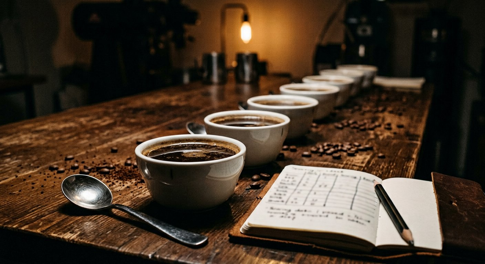

Tanggal sangrai, bukan tanggal kedaluwarsa
Setiap kantong dicetak tanggal sangrai. Puncak rasa kopi 7–21 hari setelah sangrai — kami kirim di dalam jendela itu.
Roastery kecil · Banyuwangi
Kami menyangrai per batch, mencicipi setiap batch sebelum dijual, dan mencantumkan tanggal sangrai di setiap kemasan. Tidak ada stok berbulan-bulan — hanya kopi yang masih hidup.
Kenapa Nocturne
Setiap kantong dicetak tanggal sangrai. Puncak rasa kopi 7–21 hari setelah sangrai — kami kirim di dalam jendela itu.
Cupping di tiga titik waktu (1 hari, 7 hari, 14 hari). Batch yang tidak lolos tidak dikirim — kami sangrai ulang.
Setiap batch punya catatan suhu, waktu, dan penurunan berat. Artinya rasa bulan ini bisa sama dengan bulan depan.

Katalog
Harga belum termasuk ongkir. Bisa COD area Banyuwangi, atau kirim via JNE/SiCepat/Instant.
Dari green bean ke cangkir
Beli langsung dari petani dan processor di dataran tinggi Ijen. Sampel dicek kadar air, defect, dan ukuran biji sebelum masuk gudang.
Batch kecil 1–3 kg agar kurva suhu bisa dikendalikan. Setiap batch dicatat: charge temp, development time, dan berat akhir.
Tiga titik cicip. Kalau skor dan profil tidak sesuai target, batch diulang — bukan dikirim dengan "rasa yang sedikit beda".
Kantong dengan valve satu arah, dicetak tanggal sangrai, dikirim maksimal 5 hari setelah sangrai.
Langganan
Kami kirim di tanggal yang sama setiap bulan. Bisa jeda atau ganti varian kapan saja lewat WhatsApp — tanpa kontrak, tanpa biaya tersembunyi.
Grosir & kafe
Harga khusus mulai 5 kg per bulan, termasuk kalibrasi resep dan bantuan setting grinder. Kami tidak menjual ke semua kafe di satu kota — satu area kami batasi agar partner tidak saling makan pasar.
Ilustrasi untuk House Blend. Harga final tergantung varian dan frekuensi kirim.
Pertanyaan yang sering muncul
Pesanan sebelum pukul 15.00 WIB diproses hari yang sama. Area Banyuwangi bisa COD di hari yang sama; luar kota 2–4 hari kerja. Kami kirim maksimal 5 hari setelah tanggal sangrai agar Anda menerimanya di masa terbaik.
Bisa. Pilih metode seduh saat memesan (espresso, moka pot, V60, tubruk, cold brew). Kalau Anda punya grinder sendiri, pilih biji utuh — rasanya bertahan lebih lama.
Midnight lebih gelap dan lebih tebal — dirancang untuk kopi susu dan espresso murni. Nocturne House lebih seimbang dan lebih ramah untuk semua metode, termasuk tubruk dan V60.
Kirim pesan dalam 7 hari. Kami ganti batch lain atau kembalikan uang Anda — tanpa perlu mengirim balik kemasannya. Kami butuh catatan rasanya untuk memperbaiki profil.
Bisa. Night Drip (10 sachet) paling sering dipakai untuk hadiah. Untuk pesanan 20 set ke atas kami bisa bantu kartu ucapan dan kemasan khusus.
Pesan langsung lewat WhatsApp. Dibalas manusia, bukan bot.
Pesan via WhatsApp